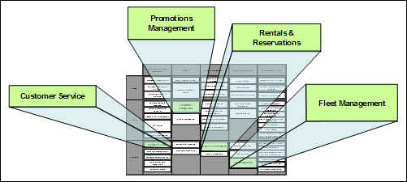
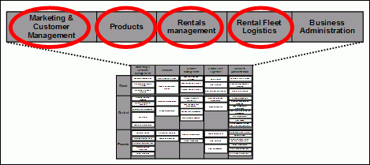
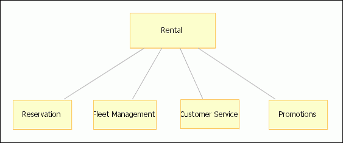

| Example: Rent-a-Car Functional Areas Description Development Example |
 |
|
| Related Elements |
|---|
An example based on a real customer situation can be used to illustrate the creation of an instance of a Functional Areas Description work product.
The customer is a major car rental company, called “Rent-a-car” in this paper. The example scenario covers three
business processes: Reservation, Check-in Vehicle, and Check-out Vehicle.  Figure 1: Rent-a-car CBM Heat Map
Hot Components in the Rent-a-car CBM Heat Map indicate competencies that will be the focus of Functional Area
Analysis.shows four “hot” components – the key components for the current SOA initiative:

CBM provides a description for each component. Component descriptions provide insight into the functional
responsibilities of domain focus areas and facilitate decomposition of domains into functional areas. As is often the
case, CBM components map well to the functional areas that need to be identified.
Functional areas and functions are described in the Rent-a-car Functional Area Descriptions table example. Rationale for choosing these domains and functional areas CBM competencies are equivalent to business domains for the purposes of Functional Area Analysis. Hot Components in the CBM Heat Map indicate competencies (business domains) that will be the focus for this project. The CBM competencies are: · Marketing and Customer Management (Customer Service is a hot component) · Products (Promotions Management is a hot component) · Rental Fleet Logistics (Fleet Management is a hot component) · Rentals Management (Rentals and Reservations is a hot component) Domains are broken into functional areas by identifying major functional responsibilities for each in-scope domain: Marketing and Customer management, Products, Rental Fleet Logistics, and Rentals Management. CBM Components provide the starting point for this analysis and in many cases can be considered as functional areas. A major functional area of the Marketing and Customer Management domain is Customer Service. Since Customer Service directly pertains to the running example (it can play a direct role in rental-related activities), it will be further analyzed by the Functional Area Analysis. Other functional areas of this domain may be of interest to a different initiative. Since they do not play direct role in this specific example, they will not be analyzed in detail at this time. For the Product domain, Promotions Management is a major functional area identified for further analysis, since promotions affect rental pricing (note the Pricing Management CBM Business Component in the related CBM Competency). Once again, although there are other functional areas that fall within this domain, the focus area for Functional Area Analysis will be on the functional areas that are directly relevant to this SOA initiative. Fleet Management is a major functional area for the Rental Fleet Logistics domain that plays a role in the reservation process, for example where vehicle availability information is important. Rentals Management has been decomposed into three major functional areas: Rental, Reservations, and Pricing. In this case the hot component “Rentals and Reservations” does not map one to one to functional areas as was the case for the other domains. The Reservation and Rental functional areas provide the most customer visible aspects of the car rental experience. Pricing is a key function for completing a reservation, as well as for completion of the vehicle rental at check-in (note that the function being referred to here is not the same as Pricing Management – Pricing in this domain involves setting a price for a specific reservation or rental based on a number of factors such as type of vehicle, type of customer, etc.). These will be the core functional areas for the next steps in the running example. Functional Area Interactions and Dependencies Functional areas interact as business processes are being carried out. This section describes each in-scope functional area identified in the previous section. Descriptions of functional Areas are organized by business domain. (Note that this could alternatively have been represented using the table shown in the notation section).

Mapping Functional Areas to Subsystems |

| © Copyright IBM Corp. 1987, 2012 All Rights Reserved Property of IBM These materials are intended only for use as part of an IBM engagement |